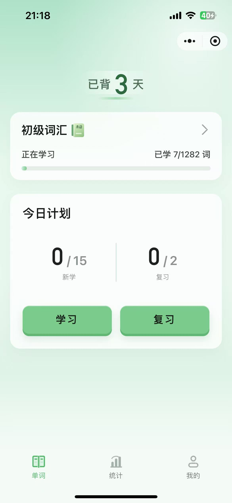
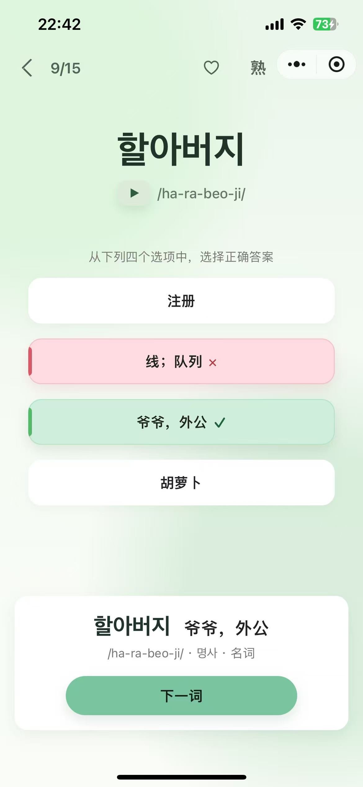
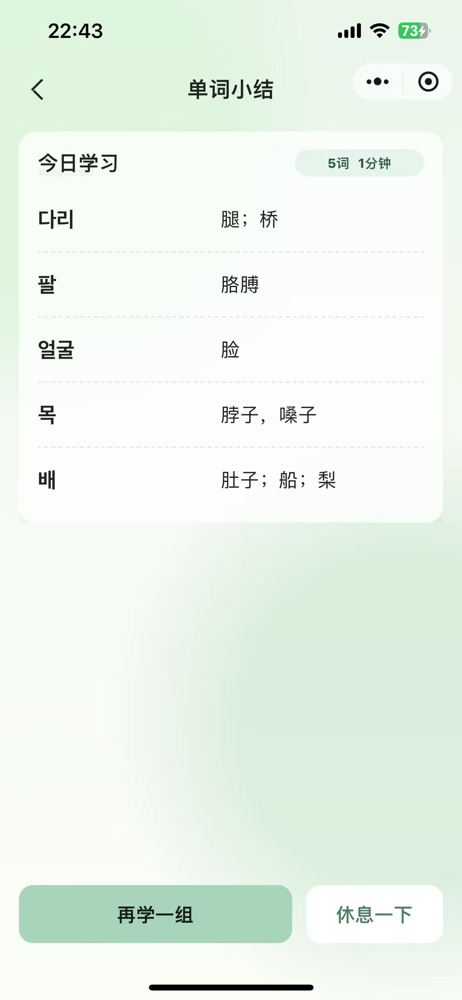
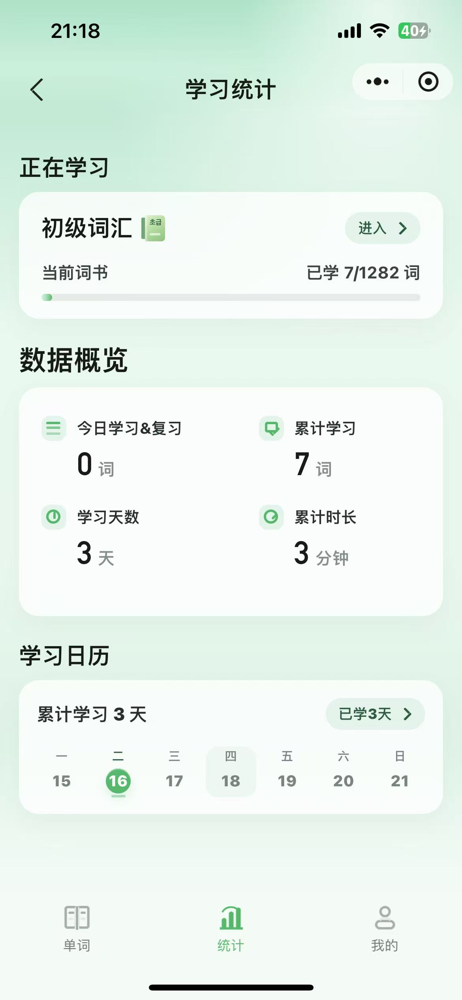

先认出来
用四选一降低第一次接触的门槛，立即获得反馈。
단어를 기억하는 더 가벼운 방법
把“眼熟”变成
“想得起来”
微信里就能完成识别、回忆与间隔复习。
选择正确释义
先想一下，再看答案
本组完成
点击手机里的“学习”开始
产品体验
用四选一降低第一次接触的门槛，立即获得反馈。
遮住答案主动回忆，让“看着眼熟”变成能独立提取。
模糊和忘记的词回到队列，已学词按 SRS 到期复习。
从首页计划到学习小结，每一步都围绕短时、可完成的学习会话。




内容与产品方法
TOPIK 官方不发布固定逐词考纲，因此产品始终使用“备考词书”口径，不把公开整理词表包装成官方词表。
等级边界参考 NIIED 与中国教育考试网，逐词分级以韩国国立国语院资料为主，释义和发音优先采用《韩国语基础词典》中文版。
黑客松展示
AI 参与需求整理、数据处理、代码实现和测试提效；可解释的 SRS、权威来源审计与人工验收负责守住结果。
把完整 JSON 转为无损紧凑运行模块，逐词还原比对零差异，最终微信预览代码包 1218KB。
韩语背词工具选择少，课程型产品偏重，只看释义又容易停留在“眼熟”。
在微信小程序中建立短时可完成、能真正提取记忆的学习闭环，并保证词库来源可信。
调研 4 款竞品，设计四选一、主动回忆、会话内重学与 SRS；建立词库审计红线，驱动 AI 完成前端、云函数和数据工具链。
交付 6 本词书、9,451 条内容与配套发音，完成云同步、包体压缩、跨词书进度共享和微信小程序发布链路。
每天一点点，韩语慢慢发芽